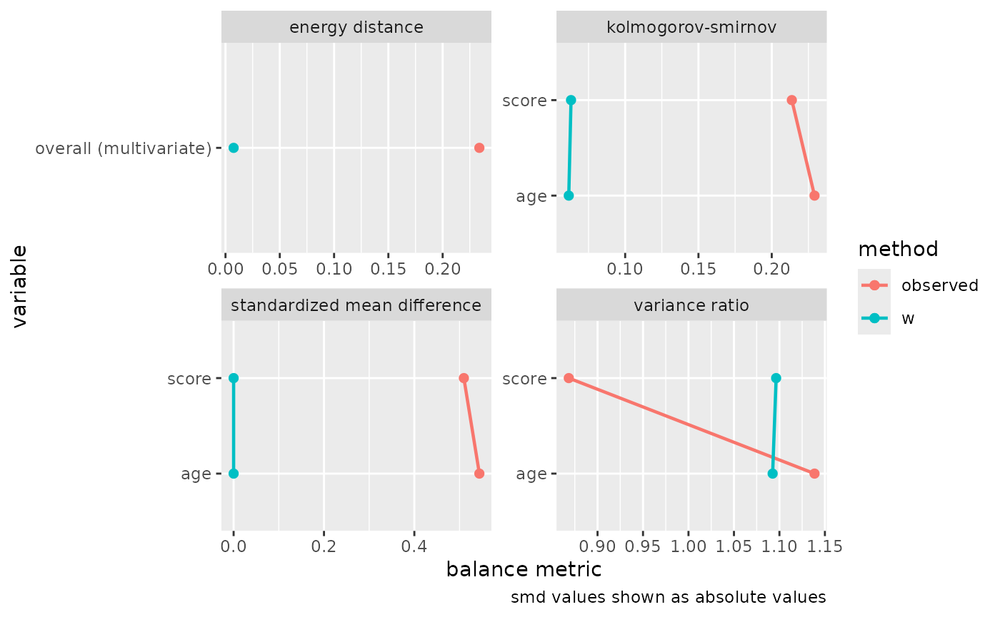

Balancing weights target covariate balance directly. Instead of
fitting a model for the probability of exposure and deriving weights
from it, a balancing method poses covariate balance as a convex
optimization problem and solves for the weights that achieve it. This
vignette walks through the core workflow for a binary exposure: fitting
weights with balance(), reading the balance they achieve,
checking that balance more broadly with halfmoon, and estimating a
causal effect.
# halfmoon provides the balance-assessment tools used throughout this
# vignette.
library(halfmoon)
library(balancing)A confounded example
We simulate a study with two confounders, age and
score, a binary exposure, and a continuous
outcome. Both confounders drive the exposure and the
outcome, so a naive comparison of exposed and unexposed units is
biased.
n <- 800
age <- rnorm(n)
score <- rnorm(n)
exposure <- rbinom(n, 1, plogis(0.5 * age - 0.6 * score))
outcome <- 1 + 0.8 * exposure + 0.7 * age - 0.5 * score + rnorm(n)
study <- data.frame(exposure, age, score, outcome)Before weighting, the exposed and unexposed groups differ on both
confounders. halfmoon’s check_balance() summarizes that
imbalance; the observed rows are the unweighted sample,
where the standardized mean differences on age and
score run to about half a standard deviation in opposite
directions. The same call appears again later with the weights
attached.
check_balance(study, c(age, score), exposure)
#> # A tibble: 7 × 5
#> variable group_level method metric estimate
#> <chr> <chr> <chr> <chr> <dbl>
#> 1 age 0 observed ks 0.229
#> 2 age 0 observed smd 0.544
#> 3 age 0 observed vr 1.14
#> 4 score 0 observed ks 0.214
#> 5 score 0 observed smd -0.510
#> 6 score 0 observed vr 0.868
#> 7 NA NA observed energy 0.234Fitting balancing weights
balance() takes the data frame, the exposure and
covariate columns selected with tidyselect, a method specification, and
an estimand. We start with entropy balancing for the average treatment
effect on the treated (ATT), which reweights the unexposed group to
match the covariate means of the exposed group.
fit <- balance(
study,
exposure,
c(age, score),
method = bw_entropy(),
estimand = "att"
)
fit
#>
#> ── Entropy balancing ───────────────────────────────────────────────────────────
#> Exposure: "exposure" (binary)
#> Estimand: "att" (focal level "1")
#> Observations: 800
#> Solver: converged in 4 iterations
#> Constraints: 2 terms (tolerance 0)
#> Largest imbalance: 0.0000 (standardized mean difference)The print method summarizes the fit. It reports the method and the exposure type detected from the data, the estimand and its focal level, the number of observations, whether the solver converged, and the largest imbalance the weights leave on the constraint terms. Here the largest standardized mean difference is effectively zero: entropy balancing achieves exact mean balance by construction.
Checking balance with halfmoon
The balance table reports balance on the terms the weights were asked
to balance. To assess balance more broadly, including statistics beyond
the mean and variables the weights did not target, extract the weights
with weights() and pass them to the halfmoon package.
study$w <- weights(fit)Passing the weights to the same check_balance() call
compares the weighting scheme against the unweighted sample across a set
of covariates.
balance_check <- check_balance(
study,
c(age, score),
exposure,
.weights = w
)
balance_check
#> # A tibble: 14 × 5
#> variable group_level method metric estimate
#> <chr> <chr> <chr> <chr> <dbl>
#> 1 age 0 observed ks 2.29e- 1
#> 2 age 0 w ks 6.15e- 2
#> 3 age 0 observed smd 5.44e- 1
#> 4 age 0 w smd 2.64e-15
#> 5 age 0 observed vr 1.14e+ 0
#> 6 age 0 w vr 1.09e+ 0
#> 7 score 0 observed ks 2.14e- 1
#> 8 score 0 w ks 6.31e- 2
#> 9 score 0 observed smd -5.10e- 1
#> 10 score 0 w smd -6.90e-15
#> 11 score 0 observed vr 8.68e- 1
#> 12 score 0 w vr 1.10e+ 0
#> 13 NA NA observed energy 2.34e- 1
#> 14 NA NA w energy 7.49e- 3plot_balance() renders the same comparison as a love
plot.
plot_balance(balance_check)
halfmoon owns the general balance-assessment workflow, so its love
plots, mirrored histograms, and balance summaries are the place to look
when you want a fuller picture than the constraint terms provide. It
also reports the effective sample size, the amount of each group that
survives weighting, through check_ess().
Estimating a causal effect
The weights are a bw vector. weights()
returns the balancing weights already multiplied by any sampling
weights, so its result goes straight into a weighted outcome model;
there is no need to compose the sampling weights yourself. Manual
composition is only called for when you have weights from a separate
source that the fit does not carry. With a marginal outcome model, the
exposure coefficient is the weighted effect estimate.
outcome_mod <- lm(outcome ~ exposure, data = study, weights = w)
coef(outcome_mod)[["exposure"]]
#> [1] 0.7705934The estimate recovers the simulated effect of 0.8, which the unweighted comparison would have missed.
Standard errors with ipw()
A weighted outcome model’s usual standard errors treat the weights as
fixed, but the weights were themselves estimated. For the
estimating-equation methods (entropy balancing, inverse probability
tilting, and the just-identified covariate balancing propensity score)
with a binary or categorical exposure, and for entropy balancing with a
continuous one, ipw() returns effect estimates with
standard errors that account for the estimation of the weights.
binary_outcome <- rbinom(n, 1, plogis(-0.3 + 0.6 * exposure + 0.4 * age))
study$event <- binary_outcome
ate_fit <- balance(
study,
exposure,
c(age, score),
method = bw_entropy(),
estimand = "ate"
)
study$w_ate <- weights(ate_fit)
event_mod <- glm(
event ~ exposure,
data = study,
family = quasibinomial(),
weights = w_ate
)
ipw(ate_fit, event_mod)
#> Inverse Probability Weight Estimator
#> Estimand: ATE
#> Effects: marginal (population-averaged)
#>
#> Weight Estimator:
#> Call: balance(.data = study, .exposure = exposure, .covariates = c(age,
#> score), method = bw_entropy(), estimand = "ate")
#>
#> Outcome Model:
#> Call: glm(formula = event ~ exposure, family = quasibinomial(), data = study,
#> weights = w_ate)
#>
#> Marginal estimates:
#> estimate std.err z ci.lower ci.upper conf.level p.value
#> rd 0.134288 0.036908 3.6385 0.06195 0.20663 0.95 0.0002743 ***
#> log(rr) 0.263052 0.073661 3.5711 0.11868 0.40742 0.95 0.0003554 ***
#> log(or) 0.540819 0.150477 3.5940 0.24589 0.83575 0.95 0.0003256 ***
#> ---
#> Signif. codes: 0 '***' 0.001 '**' 0.01 '*' 0.05 '.' 0.1 ' ' 1The vignette("inference") article explains why these
standard errors differ from the naive ones and how to obtain valid
intervals for the methods that do not carry estimating equations.
Where to go next
-
vignette("choosing-a-method")compares the six methods, the exposures and estimands each supports, and the constraint options exposed throughbalance_terms(). -
vignette("inference")covers valid standard errors after balancing, throughipw()for the estimating-equation methods and a bootstrap recipe for the quadratic-program methods.